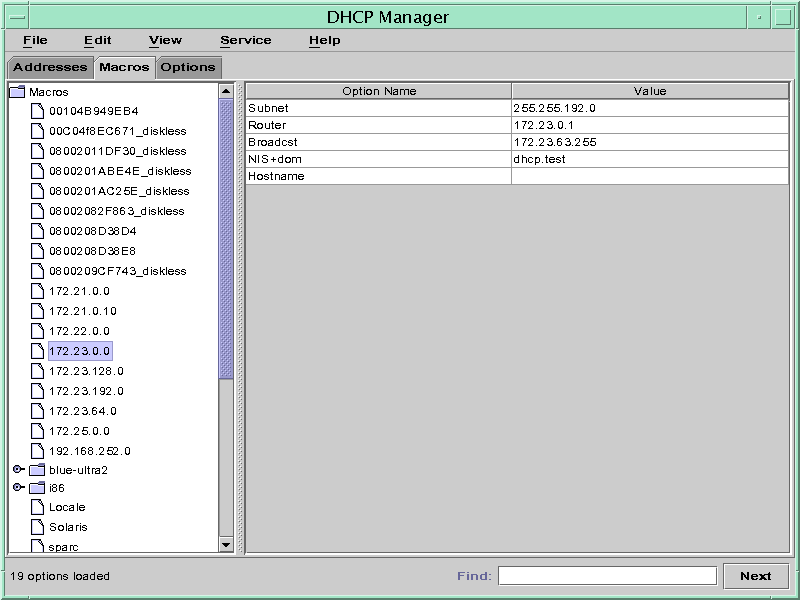
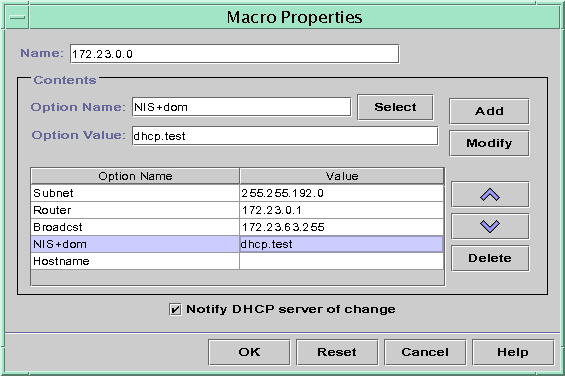

Previous
Previous
 How to Assign a Consistent IP Address to
a DHCP Client (pntadm)
How to Assign a Consistent IP Address to
a DHCP Client (pntadm)
Become superuser or assume a role or user name that is assigned to the DHCP Management profile.
For more information about the DHCP Management profile, see Setting Up User Access to DHCP Commands.
Roles contain authorizations and privileged commands. For more information about roles, see "Configuring RBAC (Task Map)" in System Administration Guide: Security Services.
Set the lease flags by typing a command of the following format:
# pntadm -M ip-address -i client-id -f MANUAL+BOOTP network-address
For example, to enable the Solaris DHCP client whose MAC address is 08:00:20:94:12:1E to always receive IP address 10.21.5.12, you would type:
pntadm -M 10.21.5.12 -i 0108002094121E -f MANUAL+BOOTP 10.21.0.0
Tip - Refer to the Client ID entry in Table 15-4 for more information about how to determine client identifiers.
Working With DHCP Macros (Task Map)
DHCP macros are containers of DHCP options. The Solaris DHCP service uses macros to gather options that should be passed to clients. DHCP Manager and the dhcpconfig utility create a number of macros automatically when you configure the server. See About DHCP Macros for background information about macros. See Chapter 14, Configuring the DHCP Service (Tasks) for information about macros created by default.
You might find that when changes occur on your network, you need to make changes to the configuration information that is passed to clients. To change configuration information, you need to work with DHCP macros. You can view, create, modify, duplicate, and delete DHCP macros.
When you work with macros, you must know about DHCP standard options, which are described in the dhcp_inittab(4) man page.
The following task map lists tasks to help you view, create, modify, and delete DHCP macros.
Task | Description | For Instructions |
|---|---|---|
View DHCP macros. | Display a list of all the macros that are defined on the DHCP server. | |
Create DHCP macros. | Create new macros to support DHCP clients. | |
Modify values that are passed in macros to DHCP clients. | Change macros by modifying existing options, adding options to macros, or removing options from macros. | How to Change Values for Options in a DHCP Macro (DHCP Manager) How to Change Values for Options in a DHCP Macro (dhtadm) How to Add Options to a DHCP Macro (DHCP Manager) How to Add Options to a DHCP Macro (dhtadm) |
Delete DHCP macros. | Remove DHCP macros that are no longer used. |
The following figure shows the Macros tab in the DHCP Manager window.
Figure 15-14 DHCP Manager's Macros Tab
How to View Macros Defined on a DHCP Server
(DHCP Manager)
In DHCP Manager, select the Macros tab.
See How to Start and Stop DHCP Manager for information about DHCP Manager.
The Macros area on the left side of the window displays, in alphabetical order, all the macros defined on the DHCP server. Macros preceded by a folder icon include references to other macros, whereas macros preceded by a document icon do not reference other macros.
To open a macro folder, click the handle icon to the left of the folder icon.
The macros that are included in the selected macro are listed.
To view the content of a macro, click the macro name.
Options and their assigned values are displayed.
How to View Macros Defined on a DHCP Server
(dhtadm)
Become superuser or assume a role or user name that is assigned to the DHCP Management profile.
For more information about the DHCP Management profile, see Setting Up User Access to DHCP Commands.
Roles contain authorizations and privileged commands. For more information about roles, see "Configuring RBAC (Task Map)" in System Administration Guide: Security Services.
Display the macros by typing the following command:
# dhtadm -P
This command prints to standard output the formatted contents of the dhcptab table, including all macros and symbols defined on the DHCP server.
Modifying DHCP Macros
You might need to modify macros when some aspect of your network changes and one or more DHCP clients need to know about the change. For example, you might add a router or an NIS server, create a new subnet, or change the lease policy.
Before you modify a macro, determine the name of the DHCP option you want to change, add, or delete. The standard DHCP options are listed in the DHCP Manager help and in the dhcp_inittab(4) man page.
You can use the dhtadm -M -m command or DHCP Manager to modify macros. See the dhtadm(1M) man page for more information about dhtadm.
The following figure shows DHCP Manager's Macro Properties dialog box.
Figure 15-15 Macro Properties Dialog Box in DHCP Manager
How to Change Values for Options in a DHCP
Macro (DHCP Manager)
In DHCP Manager, select the Macros tab.
See How to Start and Stop DHCP Manager for information about DHCP Manager.
Select the macro that you want to change.
Choose Properties from the Edit menu.
The Macro Properties dialog box opens.
In the table of Options, select the option that you want to change.
The option's name and its value are displayed in the Option Name and Option Value fields.
In the Option Value field, select the old value and type the new value for the option.
Click Modify.
The new value is displayed in the options table.
Select Notify DHCP Server of Change.
This selection tells the DHCP server to reread the dhcptab table to put the change into effect immediately after you click OK.
Click OK.
How to Change Values for Options in a DHCP
Macro (dhtadm)
Become superuser or assume a role or user name that is assigned to the DHCP Management profile.
For more information about the DHCP Management profile, see Setting Up User Access to DHCP Commands.
Roles contain authorizations and privileged commands. For more information about roles, see "Configuring RBAC (Task Map)" in System Administration Guide: Security Services.
Change option values by typing a command of the following format:
# dhtadm -M -m macroname -e 'option=value:option=value' -g
For example, to change the lease time and the Universal Time Offset in the macro bluenote, you would type:
# dhtadm -M -m bluenote -e 'LeaseTim=43200:UTCOffst=28800' -g